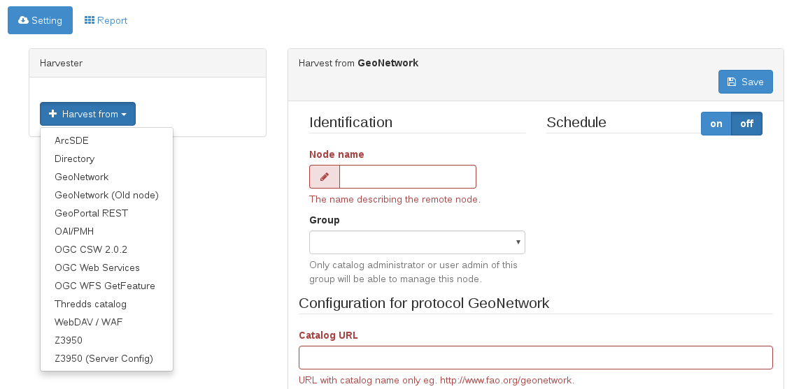

Сбор урожая¶
Самый быстрый способ добавить релевантные данные в ваш каталог — это собрать урожай. Это означает копирование данных из других каталогов в ваш собственный каталог. Существует множество протоколов, которые можно использовать для сбора урожая.
Геосеть¶
GeoNetwork может собирать данные из других каталогов GeoNetwork. Для этого урока мы будем использовать этот каталог: http://ide.siia.gov.ar/geonetwork
Чтобы добавить новый комбайн, нам нужно войти в консоль администрирования: http://localhost:8080/geonetwork/srv/eng/admin.console#/harvest
Мы выбираем опцию GeoNetwork в раскрывающемся списке Harvest from. Это откроет редактор харвестера справа. Мы вводим Имя узла и URL-адрес каталога, и мы уже можем его сохранить.
Все комбайны можно запускать вручную по желанию с помощью кнопки Harvest. Это означает, что он будет запускаться только один раз каждый раз, когда его запускает авторизованный пользователь.
Но самой интересной особенностью комбайнов является планировщик. Вы можете определить частоту запуска.
CSW¶
GeoNetwork также может собирать данные из каталогов CSW. Процесс очень похож, но вместо выбора типа сборщика GeoNetwork мы выбрали тип сборщика OGC CSW 2.0.2.
Для этого урока мы будем использовать следующий каталог: http://nationaalgeoregister.nl/geonetwork/srv/eng/csw
Пока комбайн работает, будет анимированный круг. После завершения работы комбайна будет показано количество собранных записей.
Подробнее о сборе урожая.